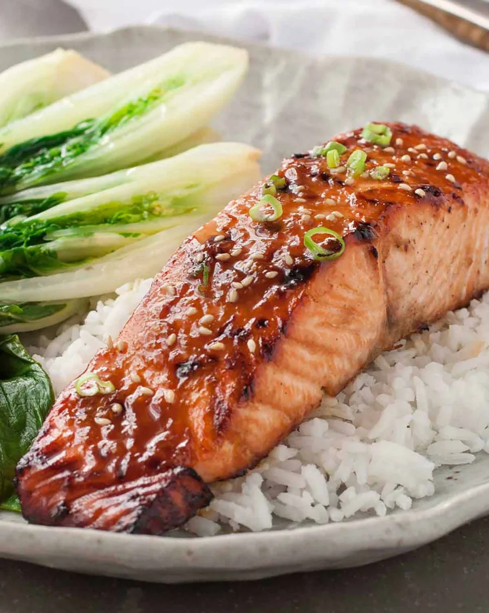

Asian Glazed Salmon

Summary
This salmon is marinated for just 30 minutes in a simple but super tasty asian marinade and then broiled/grilled to produce a goregeous caramelisation. Just a really fantastic, quick and delicious way to cook salmon using pantry staples
Ingredients
- 2x180g/ 6oz salmon fillets, skinless (Note 1)
- Oil spray(Olive oil, canola oil etc)
Marinade
- 1 tsp fresh ginger,finely grated
- 1 garlic glove, crushed
- 1 tbsp soy sauce
- 2 tbsp oyster sauce
- 2 tbsp sweet chili sauceNote 2
To Serve (Optional)
- Sesame seeds
- Scallions/shallots, finely sliced
- Steamed Asian Greens
- Rice
Instructions
- Marinade salmon- Combine the Marinade ingredients in a shallow bowl. Add salmon and turn to coat. Cover and marinate for 30 minutes or up to overnight.
- Preheat grill/broiler on high. Place the rack 25cm/ 10* from the het source.
- Glaze Place salmon on baking tray (no oil required, no paper - it will burn). Dab glaze onto salmon, whatever will stick. Don't pour excess glaze on, it will pool around the salmon and burn
- Cook- Grill/broil for 7 minutes. Remove, spray the surface generousl with oil. Grill/broil for another 1 to 3 minutes until the surface is caramelised and the salmon is cooked - the flesh should flake.(Internal temperature 50*C/122*F for medium rare- see Note 3). Be careful not to overcook the salmon!
- Serve salmon sprinkled with seasme seeds, scallions/shallots with rice and steamed Asian greens on the side.